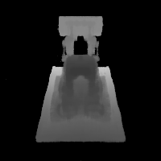

Neural Radiance Field (NeRF)
Introduction
This project is all about implementing a Neural Radiance Field (NeRF) for 3D scene reconstruction from multi-view images. We will first calibrate our camera and capture a 3D scan of our own scene, which will serve as our dataset. Before we dive into the implementation of 3D NeRF, we will explore a 2D case first to get ourselves familiar with the key concepts. Then, we will move on to the 3D NeRF implementation, for both the given Lego dataset and our own data. My resized Labubu photos and camera calibration photos are available here.
Part 0: Camera Calibration and 3D Scanning
In this part, we will take a 3D scan of our own object for building a NeRF later. We will use ArUco tags to calibrate our camera and then estimate the pose of each image after undistorting them. The calibration intrinsics and estimated extrinsics, together with the undistorted images, will be saved as a dataset for training our NeRF later.
0.1: Calibrating The Camera
The images of ArUco tags that were taken under the same zoom but from different angles and distances were used to calibrate our camera. To avoid distortion effects from real cameras, the smartphone camera was utilized instead. The pipeline is as follows:
- Loop through all the calibration images
- For each image, detect the ArUco tags using OpenCV's
cv2.aruco.detectMarkers(also handle the case where no tags are detected) - Extract the corner coordinates from the detected tags
- Collect all detected corners and their corresponding 3D world coordinates by referring to the ArUco tags as the world origin
- Use
cv2.calibrateCamerato compute the camera intrinsics and distortion coefficients
Resizing raw images smaller. The original photos were too large to be processed; therefore, they were resized first, and then we will play with the resized images for all the following parts of this project. Since all calibration and later pose estimation are also performed on the resized images, the estimated intrinsics correspond to the resized resolution, so the NeRF pipeline remains consistent.
Results:The RMS reprojection error is around 0.71 pixels, which is within a reasonable range for a smartphone camera and resized images, indicating that the calibration is successful.
0.2: Capturing a 3D Object Scan
Here, I cut one of the ArUco tags from the board used in Part 0.1 and put it next to our object to be scanned. In my case, I scanned my Labubu toy. For good NeRF results later, here we follow the guidelines below when capturing the photos:
- Take all photos under the same zoom as used in Part 0.1 (24mm focal length without digital zoom in my case).
- Keep the brightness and exposure consistent across all photos.
- Keep our hands steady while taking photos to avoid motion blur.
- Capturing photos from different angles around the object to cover all sides.
- Keep the same distance from the object for all photos, i.e., photos distributed like a dome.
- Keep the object reasonably centered in each frame and ensure it occupies enough pixels for NeRF to learn fine details.
0.3: Estimating Camera Pose
With the intrinsics from camera calibration, together with the photos taken in Part 0.2, we can estimate camera poses (position and orientation) for each image of our Labubu scan, which is a Perspective-n-Point (PnP) problem: estimating camera extrinsics given a set of known 3D points in the world coordinate system and their correspnding 2D projections in an image.
Here we use OpenCV's cv2.solvePnP function to solve this problem. The implemented pipeline is roughly as follows:
- Loop through all the images.
- For each image, detect the ArUco tag that we placed next to our object.
- Extract the corner coordinates from the detected tag.
- Define the 3D-2D correspondences between the known 3D points and the detected 2D points. Here, I define the ArUco tag's top-left corner as the world origin, and the other corners follow from the known physical tag size (6 cm × 6 cm).
- Call
cv2.solvePnP()with the 3D-2D correspondences, camera intrinsics, and distortion coefficients to estimate the rotation and translation vectors. - If successful, convert the world-to-camera transformation to camera-to-world extrinsics and save them; otherwise, return an identity matrix.
Results:Some images did not contain a clearly visible tag and were therefore skipped. This is expected and does not harm the reconstruction, as long as we retain enough diverse viewpoints. At the end of this process, we obtained 139 valid images with their estimated camera extrinsics. To verify that the estimated camera poses are reasonable, two screenshots of the visualization of the estimated camera poses rendered in Viser are shown below. The frustums form a dome-like distribution around the Labubu toy, which matches the way I captured the photos in Part 0.2 and confirms that the pose estimation pipeline is working correctly.
Visualizing Cloud of Cameras in Viser
It can be observed that our cloud of cameras form a dome-like distribution around the Labubu, matching our initial setup. Actually, careful photographing will help a lot when we train a NeRF of it (will see later).
Cloud of Cameras 1
Cloud of Cameras 2
Cloud of Cameras 3
0.4: Undistorting images and creating a dataset
Now, with the camera intrinsics and pose estimates, we can undistort our images and create a dataset for training NeRF in the later parts. For the division of training and validation sets, I randomly selected $80\%$ of the valid images for training and the remaining $20\%$ for validation. The undistorted images, along with the camera poses (c2ws) and focal length extracted from the intrinsic matrix, were saved in a .npz file with the same format as the provided synthetic Lego dataset, ensuring compatibility with the NeRF implementation in the subsequent parts.
Part 1: Fit a Neural Field to a 2D Image
Before jumping into 3D NeRF ($F: \{x,y,z,\theta,\phi\} \to \{r,g,b,\sigma\}$), let's first play with NeRF using a 2D example. In fact, NeRF will fall back to just a Neural Field ($F: \{u,v\} \to \{r,g,b\}$) in 2D, since there is no concept of radiance in 2D space.
In this part, we will create a neural field that can represent a 2D image and optimize it to fit this image. Specifically, let's train a Multilayer Perceptron (MLP) network with Sinusoidal Positional Encoding (PE) as our neural field $F$ that maps 2D pixel coordinates to the corresponding RGB colors. Some implementation details are introduced as follows.
Model Architecture and Training Configuration
Positional Encoding. To help the MLP learn high-frequency details in the image effectively, we apply Sinusoidal Positional Encoding to the pixel coordinates, together with the original coordinates, as our input to the MLP. Given an original input $x$, the PE with $L$ as its highest frequency level is defined as: $$ PE(x) = [x, \sin(2^0 \pi x), \cos(2^0 \pi x), \sin(2^1 \pi x), \cos(2^1 \pi x), \ldots, \sin(2^{L-1} \pi x), \cos(2^{L-1} \pi x)] $$ which applies to each dimension of the input independently, hence, expanding the input dimension from $x \in \mathbb{R}^d$ to $d \times (2L + 1)$.
MLP architecture. The MLP architecture for this part follows the suggested structure from the problem statement. The later parts may change some hyperparameters here and there, but all of them mainly follow this structure as a foundation below:

- Positional Encoder: apply sinusoidal PE to project the input space from
in_dim=2toin_dim=2*(2L+1), whereLis the highest frequency level. - Hidden layers: 3 fully connected linear layers with
hidden_dim=256and ReLU activations. - Output layer: a fully connected linear layer with
out_dim=3followed by a Sigmoid activation to ensure the output colors are in[0, 1].
Dataset class. A custom dataset class is inherited from torch.utils.data.Dataset that loads the image and prepares the (pixel coordinate, color) pairs for training, both of which are normalized within $[0, 1]$ range to facilitate training.
Data loader. A data loader function is implemented to randomly sample N (pixel coordinate, color) pairs from the dataset class for each training iteration.
Trainer & training configuration. The squared error (MSE) loss (torch.nn.MSELoss) between the predicted colors and ground truth is used as the objective. The model is optimized using Adam (torch.optim.Adam) optimizer with a learning rate of lr=1e-2 for n_iters=10000 iterations. Each iteration randomly samples N=10000 pixels from the image to compute the loss and update the model. The model performance is evaluated with PSNR metric, which is computed from MSE by:
$$
PSNR = 10 \cdot \log_{10}\left(\frac{1}{MSE}\right)
$$
Since we are fitting a single image, the validation set is the same as the training set here.
Fox Example: Fox Image & Ablation Study
Here we start from this image of fox. To verify that how the hyperparameters of layer width (channel size, or hidden_dim) and max frequency $L$ for the PE affect the fitting quality, we conduct a small ablation study by training the model with different combination of them. Four configurations are tested:
{kind=link}
hidden_dim=32, L=2hidden_dim=32, L=10hidden_dim=256, L=2hidden_dim=256, L=10
All other configurations remain the same as described before:
- Number of iterations:
n_iters=10000 - Learning rate:
lr=1e-2 - Number of sampled pixels per iteration:
N=10000 - Number of hidden layers: 3
Fox: Comparison of Different Configurations
From the training logs shown below, it can be observed that increasing both the layer width (hidden_dim) and the maximum frequency level (L) leads to better fitting quality, as indicated by higher PSNR values. It makes sense because a wider network has a larger capacity to learn complex mappings, and a higher frequency level allows the model to capture finer details in the image.
Fox: Visualization of Reconstructed Images During Training
Now, let's visualize the reconstructed images at different training iterations for all of the configurations. The images below show the model's output at various training stages, demonstrating how the neural field progressively learns to represent the fox image more accurately over time. With higher layer width and frequency level, the model converges faster and achieves higher quality.
Labubu Example: Reconstruct Our Own Image
Here let's try to apply the same neural field fitting pipeline to reconstruct my own image. The model and training configurations are the same as the best-performing one in the ablation study of fox image above. The reconstructed image is one of our resized labubu photos taken in Part 0.
Part 2: Fit a Neural Radiance Field from Multi-view Image
Once we are familiar with the 2D case, we can now proceed to the more interesting task that using a neural radiance field to represent a 3D space, through inverse rendering from multi-view calibrated images as supervision signals. For this part, we will use the Lego scene from the original paper but with lower resolution ($200 \times 200$) and preprocessed cameras (available from here).
Let's first build the bricks for our NeRF implementation, including creating rays from the estimated camera, sampling points along each ray, and volume rendering, which will be used together to form the NeRF training and inference pipeline.
Part 2.1: Create Rays from Cameras
Recall that NeRF is a volumetric representation of a 3D scene, where each point in space emits radiance in different directions. To render an image from a given camera viewpoint, we need to generate rays that originate from the camera and pass through each pixel in the image plane. Therefore, here we need a function to convert a pixel coordinate to a ray with origin and normalized direction, say, ray_o, ray_d = px2ray(K, c2w, uv). Instead of implementing the full function directly, let's first decompose it into multiple steps, each of which can be implemented and verified separately, and then we can combine them to form the final function.
get_homoge_coords(x): convert Euclidean coordinatesxinto homogeneous coordinates by appending a 1 to each coordinate.homoge_back(x_h): convert homogeneous coordinatesx_hback to Euclidean coordinates by dividing by the last coordinate and removing it.
Camera to World Coordinate Conversion. The transformation between the world space $\mathbf{X}_w = (x_w, y_w, z_w)$ and the camera space $\mathbf{X}_c = (x_c, y_c, z_c)$ can be defined as a rigid body transformation that composed by a rotation ($\mathbf{R} \in \mathbb{R}^{3 \times 3}$) and a translation matrix ($\mathbf{t} \in \mathbb{R}^{3}$). The whole transformation can be represented as a single linear transformation in the homogeneous coordinate system:
$$ \begin{bmatrix} x_c \\ y_c \\ z_c \\ 1 \end{bmatrix} = \begin{bmatrix} \mathbf{R} & \mathbf{t} \\ 0 & 1 \end{bmatrix} \begin{bmatrix} x_w \\ y_w \\ z_w \\ 1 \end{bmatrix} = \mathbf{T}_{c \gets w} \begin{bmatrix} x_w \\ y_w \\ z_w \\ 1 \end{bmatrix} $$ in which the $\mathbf{T}_{c \gets w}$ is called world-to-camera (w2c) transformation matrix. Similarly, we can have the camera-to-world (c2w) transformation matrix $\mathbf{T}_{w \gets c}$ by inverting $\mathbf{T}_{c \gets w}$.
Implementation details: I implemented a transform(c2w, x_c) function that maps camera coordinates x_c to world coordinates using the c2w transformation matrix, with the following steps:
- Convert
x_cinto homogeneous coordinates usingget_homoge_coords, producing tensors of shape(N, 4)for a single camera or(B, N, 4)for batched cameras. - Apply the camera-to-world transform using
np.einsum:- single camera:
x_w_h = np.einsum('ij,nj->ni', c2w, x_c_h) - batched cameras:
x_w_h = np.einsum('bij,bnj->bni', c2w, x_c_h)
(N,3)and(B,N,3)inputs. - single camera:
- Convert the transformed points back to Euclidean coordinates using
homoge_back, obtaining the final world-space coordinates.
Pixel to Camera Coordinate Conversion. Consider a pinhole camera with focal length $(f_x, f_y)$ and principal point $(o_x, o_y)$ where $o_x = W / 2$ and $o_y = H / 2$. The intrinsic matrix $\mathbf{K}$ of this camera can be represented as: $$ \mathbf{K} = \begin{bmatrix} f_x & 0 & o_x \\ 0 & f_y & o_y \\ 0 & 0 & 1 \end{bmatrix} $$ which can be used to project a 3D point $(x_c, y_c, z_c)$ in the camera coordinate system to a 2D point $(u,v)$ in the image pixel coordinate system: $$ s \begin{bmatrix} u \\ v \\ 1 \end{bmatrix} = \mathbf{K} \begin{bmatrix} x_c \\ y_c \\ z_c \end{bmatrix} $$ in which $s = z_c$ is the depth of this point along the optical axis. Here, we implement a inverse mapping of this projection, i.e., from pixel coordinate $(u,v)$ to camera coordinate $(x_c, y_c, z_c)$ given a specific depth $s$ and the intrinsic matrix $\mathbf{K}$: $$ \mathbf{x}_c = s \cdot \mathbf{K}^{-1} [u, v, 1]^{\top} $$
Implementation details: I implemented a px2cam(K, uv, s) function that maps pixel coordinates uv to camera coordinates:
- Convert
uvto homogeneous coordinatesuv_h = (u, v, 1)usingget_homoge_coords. - Compute the inverse intrinsic matrix
K_inv = np.linalg.inv(K). - Apply the inverse projection
x_c = s * K_inv @ uv_husingnp.einsum, supporting both(N, 2)and batched(B, N, 2)inputs.
Pixel to Ray. A ray can be defined by an origin vector $\mathbf{r}_o \in \mathbb{R}^3$ and a direction vector $\mathbf{r}_d \in \mathbb{R}^3$. In the case of a pinhole camera, we want to know the $\{\mathbf{r}_o, \mathbf{r}_d\}$ for every pixel $(u,v)$. The origin $\mathbf{r}_o$ of those rays is easy to get because it is just the location of the camera in world coordinates. For $T_{w \gets c}$ transformation matrix, the camera origin is simply the translation component: $$ \mathbf{r}_o = \mathbf{t}_{w \gets c} $$
To calculate the ray direction for pixel $(u,v)$, we can simply choose a point along this ray with depth equal to 1 ($s=1$) and find its coordinate in world space $\mathbf{X}_w = (x_w, y_w, z_w)$ using our previously defined transformations, then the normalized direction vector can be computed as: $$ \mathbf{r}_d = \frac{\mathbf{X}_w - \mathbf{r}_o}{\|\mathbf{X}_w - \mathbf{r}_o\|_2} $$
Implementation details: The implemented px2ray(K, c2w, uv) function combines the above steps to compute the ray origin and direction for pixel coordinates uv, by:
- Convert pixel coordinates
uvto camera coordinates usingx_c = px2cam(K, uv, s=1.0). - Convert camera coordinates
x_cto world coordinates usingx_w = transform(c2w, x_c). - Extract the camera origin
r_ofrom the translation component ofc2w. - Compute the ray direction
r_dby normalizing the vector fromr_otox_w. - Finally, return
r_oandr_d.
Part 2.2: Sampling
Recall that the training signal of NeRF comes from the rendered images, which are generated by casting rays from the camera through each pixel and sampling points along these rays to query the neural radiance field. Before building a volumetric renderer, we first need to implement the functions to sample points along rays, which can be broken down into two steps: (1) sampling rays from images and (2) sampling points along each ray.
Dataset Class. Similar to what we did in Part 1 for the 2D case, here we again create a custom dataset class DatasetNerf that loads the multi-view images images, their extrinsics c2ws, and intrinsics K. It's methods include:
__init__(): Loading the images, camera extrinsics, and intrinsics, then getuvwith a shift of 0.5, and get the normalized colors.__len__(): Return the number of pixels.__getitem__(): Return the pixel coordinates, normalized colors, and thec2wmatrix of the current view.
Sampling Rays from Images. Here we extend what we did in Part 1 (sample pixel coordinates and colors), together with the camera intrinsics and extrinsics, to convert the pixel coordinates to ray origins and directions.
Implementation details: The implemented sample_rays_from_imgs(dataset,N_rays) function randomly samples N_rays rays from multi-view images in the dataset by:
- Randomly select
N_rayspixels from all images in the dataset. - Return the selected pixel coordinates
uv, colors, and correspondingc2wmatrices, in the dimension of(N_rays, 2),(N_rays, 3), and(N_rays, 4, 4)respectively.
Sampling Points along Rays. After having rays, we need to discretize each ray into samples that live in the 3D space. The simplest way is to uniformly sample points along the ray (t=np.linspace(near,far,n_samples)). For the Lego scene that we have, we can set near=2.0 and far=6.0. The actually 3D coordinates can be acuired by $\mathbf{x} = \mathbf{R}_o + \mathbf{R}_d \cdot t$. However, this would lead to a fixed set of 3D points, which could potentially lead to overfitting when we train the NeRF later on. On top of this, we want to introduce some small perturbation on the points only during training, so that every location along the ray would be touched upon during training. This can be achieved by something like t = t + (np.random.rand(t.shape) * t_width) where is set to be the start of each interval.
Implementation details: The implemented sample_pts_from_rays(r_os, r_ds, N_pts, near, far, perturbation) function samples points along each ray defined by ray_o and ray_d:
- Get the number of rays from
N_rays = r_os.shape[0]. - Create
N_pts + 1depth boundaries betweennearandfarusingtorch.linspace, and derive the interval startst_startand widthst_width, both of shape(N_pts,). - If
perturbation=True, sample a random offsetnoisein[0, 1)for each ray and each interval, and sett = t_start[None, :] + noise * t_width[None, :], so that eachtlies inside its interval. Otherwise, use the interval midpoints. - Compute the 3D sample positions with
pts = r_os[:, None, :] + r_ds[:, None, :] * t[..., None], producingptsof shape(N_rays, N_pts, 3). - Prepare expanded versions of the ray origins and directions for later rendering:
r_os_expandandr_ds_expandwith shape(N_rays, N_pts, 3), the per-interval distancesdeltasof shape(N_rays, N_pts, 1)obtained fromt_width, and the sampled depthstsof shape(N_rays, N_pts, 1).
These outputs will be used directly by the volume rendering module in the next part to accumulate colors and depths along each ray.
Part 2.3: Putting the Dataloading Together
Similar to Part 1, we prepare a simple dataloader that randomly samples pixels from the multi-view training images. The main difference here is that instead of returning only pixel coordinates and colors, we also convert each sampled pixel into a 3D ray in world space and return the ray origin, ray direction, and pixel color.
Implementation details: The function sample_rays(dataset, N_rays, K) wraps the previous utilities into a single call:
- First, it calls
sample_rays_from_imgs(dataset, N_rays)to randomly sampleN_rayspixels across all views. This returns pixel coordinatesuvs, colors, and the correspondingc2wmatrices. - To use the batched interface of
px2ray, the sampled pixels are reshaped touvs_batchof shape(N_rays, 1, 2), and thec2wmatrices are stacked into an array of shape(N_rays, 4, 4). - We then call
px2ray(K, c2ws_batch, uvs_batch)to obtain ray origins and directions with shape(N_rays, 1, 3), and squeeze the singleton dimension to get(N_rays, 3). - Finally, we convert the NumPy arrays back to
torch.float32tensors and returnr_os,r_ds, andcolorsas tensors of shape(N_rays, 3). These are the basic ray batches that will be used in the NeRF training loop.
Visualization of Ray & Point Sampling in Viser
As a demonstration, here we visualize how the rays, as well as the points along each ray, are sampled in the 3D space, which are the core components of NeRF rendering and training process. For each view, we visualize 100 rays, eahch of which has 64 sampled points along it (with perturbation) within the near and far bounds.Ray and Point Sampling
Ray and Point Sampling
Ray and Point Sampling
Ray and Point Sampling
Part 2.4: Neural Radiance Field
With the samples in 3D space, we can then use a neural net to predict the density and color for those samples. Similar to Part 1, here we create an MLP network with three main differences:
- Input is now 3D world coordinates, alongside a 3D vector as the ray direction. And the output is not only the color but also the corresponding density for the 3D points. In the radiance field, the color of each point depends on the view direction, so we are going to use the view direction as the condition when predicting colors. Here we use Sigmoid to constrain the color outputs to [0,1], and use ReLU to constrain the output density non-negative. The rray direction also needs to be encoded by PE but can use less frequency (e.g., L=4) than the coordinate PE (e.g., L=10).
- Since we are doing a more challenging task of optimizing a 3D representation, here we need a deeper network with more parameters.
- Inject the input (after PE) to the middle of our MLP through concatenation, which is a general trick for deep neural network.
The architectural design and implementation follow the suggested one in the project description, illustrated below. The following parts may change hyperparameters, but all of them are modified from this one as the foundation. The modifications will be explicitly reported later if applicable.

Part 2.5: Volume Rendering
The core volume rendering equation is as follows: $$ C(\mathbf{r}) = \int_{t_n}^{t_f} T(t) \sigma(\mathbf{r}(t)) \mathbf{c}(\mathbf{r}(t), \mathbf{d}) dt, \quad \text{where} \quad T(t) = \exp\left(-\int_{t_n}^{t} \sigma(\mathbf{r}(s)) ds\right) $$ This fundamentally means that at every small step $dt$ along the ray, we add the contribution of that small interval $[t, t+dt]$ to that final color, conceptually, we sum contributions over infinitely many infinitesimal intervals, which becomes an integral.
The discrete approximation (thus tractable to compute) of this equation can be stated as follows: $$ \hat{C}(\mathbf{r}) = \sum_{i=1}^{N} T_i \alpha_i \mathbf{c}_i = \sum_{i=1}^{N} w_i \mathbf{c}_i, \quad \text{where} \quad T_i = \exp\left(-\sum_{j=1}^{i-1} \sigma_j \delta_j\right), \quad \alpha_i = 1 - \exp\left(-\sigma_i \delta_i\right) $$ where $\mathbf{c}_i$ is the color obtained from our network at sample location $i$, $T_i$ is the probability of a ray not terminating before sample location $i$, and $\alpha_i = 1 - \exp\left(-\sigma_i \delta_i\right)$ is the probability of terminating at sample location $i$.
We can also interpret this rendering process as a weighted sum of colors along the ray, where the weight $w_i = T_i \alpha_i$ indicates how much each sample contributes to the final color.
Implementation details: The function volrend(sigmas, rgbs, deltas, ts, depth) implements this discrete renderer:
- All inputs have shape
(N_rays, N_pts, ...)except fordepth, which indicates whether to render an RGB image or a depth map. - Compute the opacities
alphas = 1 - exp(-sigmas * deltas)giving shape(N_rays, N_pts, 1). - Compute the transmittances
T_i:- accumulate
sigmas * deltasalong the ray, - shift by one position and prepend a zero to obtain the sum of previous intervals,
- apply
exp(-...)to obtainT_i.
- accumulate
- Render color by taking the weighted sum
torch.sum(alphas * T_i * rgbs, dim=1), producing(N_rays, 3). - If
depth=True, we instead computetorch.sum(w_i * ts, dim=1), producing(N_rays, 1). The role of depth rendering will be introduced in a later section.
Here we build a train_val_nerf function that encapsulates the whole NeRF pipeline: sampling rays, sampling points along each ray, querying the MLP, volume rendering, and computing the photometric loss, together with periodic validation and checkpointing.
Implementation details: In each training iteration, the following steps are performed:
- Randomly sample
N_rays_per_iterrays from the training images usingsample_rays. - Sample
N_ptspoints along each ray withsample_pts_from_rays, with perturbation enabled during training. - Feed the 3D points and expanded view directions to
MlpNerfto predict densities and colors. - Apply the volume renderer
volrendto obtain the predicted pixel colors, and minimize the MSE loss to the ground-truth colors using Adam. - Every 100 iterations, run the same pipeline on the validation set with perturbation disabled to log the validation PSNR.
- Periodically save model checkpoints for later visualization and video rendering.
To use our trained NeRF model to render novel views, here we implement a function render_frames that takes in a set of camera extrinsics and intrinsics, and produces the rendered images. This function is similar to the training loop but without optimization, and it processes all pixels in the image instead of sampling a subset of rays.
Implementation details: The function render_frames(nerf_model, c2ws, K, H, W, N_pts, near, far, depth) is implemented as follows:
- Create a meshgrid of all pixel coordinates
uvin the image of size(H, W), and reshape them to(H*W, 2), during which the 0.5 offset is added to each coordinate. - Get all rays for the image by calling
px2ray(K, c2ws, uv), producingr_osandr_dsof shape(H*W, 3). - Sample points along all rays using
sample_pts_from_rays(r_os, r_ds, N_pts, near, far, perturbation=False), obtaining the 3D sample positionspts, ray originsr_os_expand, ray directionsr_ds_expand, deltas, and depthsts. - Query the NeRF model to get densities and colors for all sampled points.
- Perform volume rendering using
volrendto get the final rendered image or depth map. - Reshape the output back to
(H, W, 3)for images or(H, W, 1)for depth maps, and return the result.
Experiment: NeRF of Lego Scene
Lego NeRF with 1k iterations
Here we first adopt the suggested hyperparameters from the project problem statement, the configurations are as follows:
- Number of rays per iteration: 10000
- Number of points per ray: 64
- Number of training iterations: 1000
- Learning rate: 5e-4
- Near and far bounds: 2.0 and 6.0
- Highest frequency level for position PE: 10
- Highest frequency level for direction PE: 4
The training process by plotting the predicted images across iterations, training PSNR curve on train and validation sets, and the rendered test set video, are as follows:
Test video
Iteration 200
Iteration 400
Iteration 600
Iteration 800
Iteration 1k
Lego NeRF with more iterations
It is apparent that from the training log of 1k iterations, the model is still not fully converged. Here we increase the training iterations and the number of points to see how the model is improved. Let's keep all other hyperparameters the same as before, except increasing the number of training iterations to 10000.
The training process by plotting the predicted images across iterations, training PSNR curve on train and validation sets, and the rendered test set video, are as follows:

Test video
Iteration 600
Iteration 1k
Iteration 3k
Iteration 6k
Iteration 10k
Observations
From the above results, we can see that with more training iterations, the NeRF model is able to produce significantly better renderings of the Lego scene. The PSNR on both training and validation sets improves steadily, indicating that the model is learning a more accurate representation of the 3D scene. The rendered images become sharper and more detailed, with fewer artifacts compared to the 1k iteration model. This demonstrates the effectiveness of NeRF in capturing complex 3D structures and view-dependent effects when given sufficient training time.
Part 2.6: Training with our own data
Now, it's time to train a NeRF model using our own captured Labubu dataset from Part 0. The model architecture keeps the same as before, except increasing the highest frequency level for position PE to 20 and for direction PE to 8, to better capture the fine details in the real-world scene. The training configurations are as follows:
- Number of rays per iteration: 10000
- Number of points per ray: 96
- Number of training iterations: 30000
- Learning rate: 5e-4
- Near and far bounds: 0.02 and 0.4
- Highest frequency level for position PE: 20
- Highest frequency level for direction PE: 8
Results & Discussion
With some experiments, I found that increasing the frequency levels can improve the model's performance a little bit, but will overfit the training data if setting them too high without regularization. Another observation is that the sampling range defined by [near, far] is crucial and very sensitive for obtaining accurate results, which seems due the drawback of uniform sampling strategy.
The training process by plotting the one predicted training image across iterations, training PSNR curve on train and validation sets, and the rendered novel video, are as follows. It can be observed that the model already overfits the training data at around 2k iterations, however, keep training it can typically give us better results when rendering our novel views.
Labubu Novel Video
Iteration 200
Iteration 1k
Iteration 2k

Iteration 5k
Iteration 10k
Iteration 30k
Bells & Whistles: Depth map video for the Lego scene
We can also render the depth map with the weight $w_i = T_i \alpha_i$ computed during volume rendering, which is the "expected depth" expressed as: $$ \bar{t} = \sum_{i} T_i \alpha_i t_i = \sum_{i} w_i t_i $$
Implementation details: The volrend function already supports rendering depth maps by setting the depth=True flag. During the rendering process, if this flag is set, the function computes the expected depth along each ray using the weights and sampled depths, returning a depth map instead of an RGB image. Another trick to improve the quality of visualized depth maps is to normalize each frame individually to the range of $[0,1]$, in my implementation, I achieve this by frame = np.clip((frame - near)/(far - near), 0, 1) before saving the depth frames as images or videos.
The depth map video of the Lego scene is shown below:
